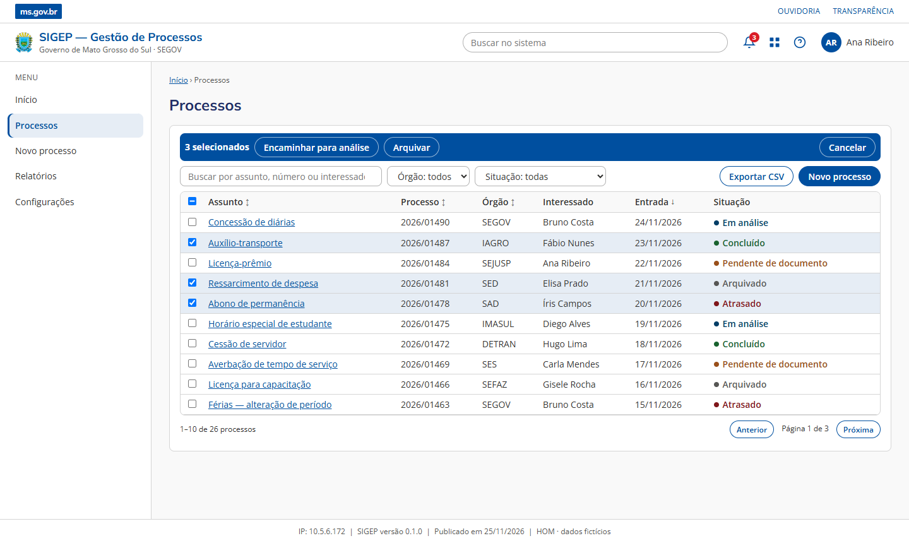

Um Design System, três contextos
Como o Design System MS pode servir ao portal do cidadão, aos sistemas internos e aos painéis de BI, e como chegamos a essa proposta.
ms.gov.br Laboratório · novembro de 2026 · para UCQI e SGD
"O Design System parece feito só para o portal."
É a percepção dos desenvolvedores, e concordamos. O risco é cada sistema fazer o seu e o Estado perder a identidade.
Evoluir o DS, não criar outro
| Portal do cidadão | Sistemas internos | Painéis de BI | |
|---|---|---|---|
| Objetivo | Acessar um serviço | Executar atividades | Analisar e decidir |
| Frequência | Pontual | O dia todo | Recorrente |
| Densidade | Confortável | Compacta | Compacta ou padrão |
| Tabelas | Consulta simples | Ordenar, filtrar, agir em lote | Comparar e explorar |
| Prioridade | Fácil de entender | Eficiência | Clareza analítica |
Mesma identidade, mesmos tokens, mesma acessibilidade. Muda a medida e entram os padrões que faltam.
Do incômodo à prova, em cinco passos
- EscutarA queixa dos devs e o pedido da Duda antes da apresentação à CSIC.
- PesquisarAgentes de IA leram Carbon (IBM), PatternFly, gov.br DS, USWDS, MOJ (UK) e W3C.
- MapearConferimos no Storybook oficial o que já existe e o que falta.
- PrototiparUm laboratório em Storybook com os tokens oficiais e só o que falta.
- ProvarDuas POCs: um sistema com CRUD e um painel de BI.
Cada passo deixou um registro: referências com link, mapa, padrões nas 5 perguntas e as POCs.
Boa parte já existe no DS oficial
Já existe:
Falta (padrão de uso e variação):
O problema não é falta de componente. É falta de variação e de padrão para outros contextos.
O mesmo componente, três medidas
Confortável
Portal do cidadão · linha 48 pxPadrão
Uso geral · linha 40 pxCompacta
Sistemas e BI · linha 32 pxMedidas do Carbon (32/40/48) e a ideia de densidade alta, média e baixa do gov.br DS. No oficial, vira um token: --ds-density.
Seis padrões, cada um nas 5 perguntas
O que é? Quando usar? Quando não usar? Como implementar? Que cuidados de acessibilidade?

SIGEP: um sistema do governo, com cara de governo
- Moldura do DS: faixa ms.gov.br, barra do sistema, menu lateral e rodapé técnico.
- Listagem com busca, filtros, ordenação e paginação.
- Ações em lote, detalhe ao lado, cadastro com validação, edição e exclusão com "Desfazer".

Painel de Atendimentos: dado com contexto
- Filtros que recalculam indicadores, gráficos e tabela.
- Título que diz o achado; fonte, atualização e método em todo gráfico.
- Clique na barra filtra o órgão; tabela comparativa ordenável.
Do laboratório para o Design System oficial
Laboratório: fabioramos-02.github.io/design-system-ms-lab · dados fictícios.